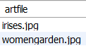
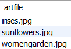
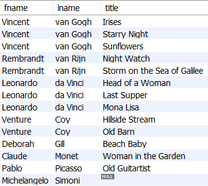
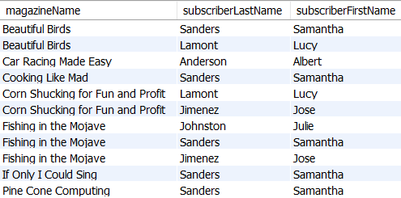
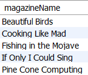
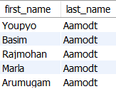
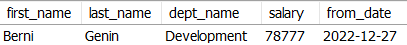

Instructions: Using the v_art, magazine, and employee schemas, write SQL queries in Workbench that solve each of the following scenarios or questions. Write all your queries in one tab in Workbench. Please number your queries by writing a comment above each of your queries similar to this comment:
-- Query 1
Save your SQL script with all seven queries as a .sql file and submit your saved .sql file.
1. When you visit art.byuiwebdev.com and you search by Period/Style and you choose Impressionism, you get two resulting images ("Woman in the Garden" and "Irises"). What query could be used in the website code that allows the user to see these images? No join is needed.

2. When you visit art.byuiwebdev.com and you search by Subject and type in the word flower, you get three images. What query would have allowed the user to get those results? (Remember the keyword might have been 'flowers' but the user typed 'flower'.)

3. List all the artists from the artist table but only the related artwork from the artwork table. We need the first and last name and artwork title.

4. List all subscriptions with magazine name and subscriber last and first name and sort alphabetically by magazine name.

5. List all the magazines that Samantha Sanders subscribes to.

6. List the first 5 employees from the 'Customer Service' Department. Put them in alphabetical order by last name.

7. Find out the current salary and department of Berni Genin. You can use the ORDER BY and LIMIT to get just the most recent salary.
